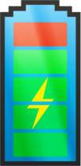

Disc Test:
The DISC test result put me in category
S: the steady person. If I'm going to be honest, I find such tests
utterly ridiculous and don't agree with
them what so ever. You're trying to divide humans into groups that don't match? Sure, I have some
trademarks of the
steady person, but I also have trademarks of the other types and most of all, I can find myself in all
types and
also in none. And that goes for almost all of us. But hey, you know, maybe I'm wrong? Let's just see
what the future
brings right ;)
The movie: Patser
So, we went to see the movie 'Patser' by
Adil El
Arbi
(couldn't find an English link, sorry!) in the Kinepolis of Ghent. I normally don't expect much from
the Dutch movie industry
and with that thought in mind, I went to watch the movie with 0 expectations. I've got to say, I was
surprised in
a good way! I really did not expect it to be this 'good'. Okay, sure, there were some scenes where he
over did it
in my opinion and as he had warned us that for many of the cast, it was their first acting performance
ever and so,
the acting wasn't always that great but overall, I would give it a solid 7/10. I've seen better movies
but also a
lot worse!
You can find the trailer right here:
Patser
Power Distance
As we were told, I made my task about the power distance in both Russia and Sweden. I made a statement
that in countries
with more power distance, you would earn more as a boss than as a normal employee. I did my research
and found out
that in Russia, a CEO earns about 2 340 244 ₽ as an average salary. In Sweden, a CEO earans about
1 275 227
kr. If we convert both currencies to the euro, we get in Russia an average of 33 059.16
€ and in Sweden
an average of 126 720.22 €. You can clearly see that my statement was wrong.
InnovIT
Week 1: The Start-up
12/3/2018 – 18/3/2018
So, we decided to do a crowd-sourced battery charging app/service called
PowerUp™. The idea is to create a community where nobody has to run out of battery ever
again. We plan
to make charging up your electronics a piece of cake with charge points everywhere, a map to indicate
the nearest
charging point and so much more! The crowd-sourced charging would be based upon people who can install
a "plug" somewhere
on the outside of their house. If they were to supply electricity to the people, they would get
rewarded for it that
it wouldn't be a 0-operation for them.
At this point, I can't share much about our project seeing how everything is being worked out
and we're only in
the development stage. I'll keep giving updates on how our project progresses. For now, I can give you
at least a
sneak peak of how our current (and certainly not finished) app logo looks like:

Week 2 & 3: Our value for society
19/3/2018 – 1/4/2018
We've been working hard on our project these last two weeks and we've made some pretty big changes. The
first change
I want to talk about is the fact that we had a name change. I didn't like PowerUp and so I started a
poll with a
few other names and it seems like I'm not the only one who wanted another name. Eventually we came to
an agreement
and we changed our name to
ChargeBy™. With a new name also came a new logo. I laid the foundations for it by
sketching something and
the group seemed to like it, so we worked it out further. I'm very happy with how it turned out. Here's
a preview:
Company name:
Slogan:
Company logo:

Now for our value to society: I think we all know how annoying it can get when your phone or
your electric skateboard
or ... has run out of battery. They always do at the exact wrong moments. Now, you don't ever have to
worry about
that any longer. We think we can add a lot of value to society just by making sure their batteries stay
topped off!
The commercial
2/4/2018 – 2/5/2018
We really had a blast shooting our commercial and editing it all. I think it turned out ok for
non-professional editors
and camera crew. We tried to speak to the average person with an electronic device and I think we
reached them!
If you want to watch our commercial, you can find a link right here:
The
commercial
My value to the team
As you all know by now and as de disc test has pointed out, I'm the reliable kind of guy in the team. I
make sure we
do our tasks and we finish them. As such, I performed my part and made sure we all did what we had to
do. Sometimes
I had to motivate them a bit harder than other times, but I guess that's my task. I also got to do the
tasks which
I liked the most so I ain't complaining!